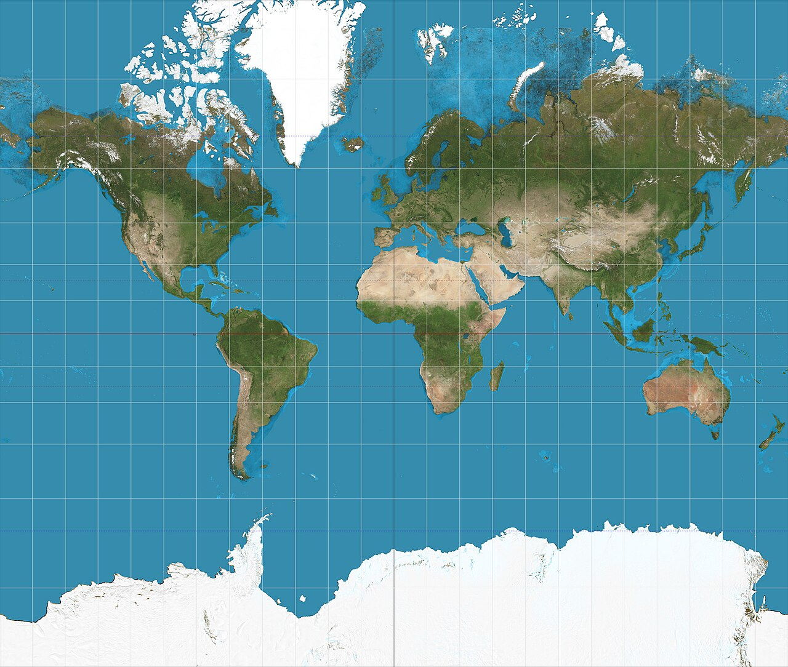

為什麼每一張平面世界地圖，都會扭曲地球？
地圖不是世界的透明窗口，而是一次數學取捨：它保留了什麼，又犧牲了什麼？
打開常見的世界地圖，格陵蘭看起來很大，北歐和加拿大彷彿佔據了世界的上半部。我們容易以為，地圖只是把地球縮小後攤在紙上。但地球表面是彎曲的；把它完整地呈現在平面上，不可能同時保留所有幾何性質。製圖時，必須選擇哪些失真可以接受。
一、把橘子皮攤平，問題就出現了
想像你把橘子皮完整剝下來，再試著將它攤平在桌面上。你會發現，不是皮裂開，就是某些地方重疊、拉扯或留下皺褶。橘子皮攤不平，地球表面也有同樣的幾何限制：球面沒有辦法在不改變任何距離、角度與面積的情況下，完整攤平。
地圖學用「地圖投影」（map projection）處理這件事。地圖投影用一套數學規則，把地球上的位置轉換成平面座標。每種規則都能保留某些特性，代價是其他特性會失真。
選地圖時，與其問「哪一張最正確」，不如問「為了這個用途，哪一種失真可以接受？」
二、墨卡托投影為什麼如此常見？
墨卡托投影於 16 世紀問世，對傳統海上導航有重要用途：它能將恆向線呈現為直線，讓航海者能以固定羅盤方向規劃航線。不過，它也會放大高緯度地區的面積與形狀。愈靠近兩極，變形愈嚴重；在標準墨卡托投影上，極點本身甚至無法以有限的地圖座標呈現。
這代表墨卡托投影並不是一張「錯誤」的地圖。對某些導航用途而言，它的特性非常有用；但拿它比較各地國土大小，就可能嚴重誤判。美國地質調查局指出，平面地圖無法同時準確保留方向、距離、面積與形狀；不同投影的取捨，取決於地圖要服務的目的[1]。
失真有多嚴重，可以用數字比較。路透社 2025 年的圖像報導用格陵蘭和非洲作比較：格陵蘭面積約 210 萬平方公里，非洲約 3,030 萬平方公里，報導稱非洲約是格陵蘭的 14 倍，但在墨卡托地圖上，格陵蘭常常看起來和非洲一樣大[4]。
同一種失真，在一種工作裡可能是優點，換個用途卻可能誤導判斷。

三、沒有完美投影，那該怎麼選？
如果想比較不同地區的面積，等積投影能保留面積比例，但形狀通常會有不同程度的變形。如果關心局部方向或小範圍角度，保角投影可能更合適；若要顯示從某個中心出發的距離，則可以選擇特定的等距投影。沒有一種投影能同時滿足所有目標。
用途不同，需要的地圖也不同。氣象學家呈現全球氣候資料、航海者規劃路線、城市工程師製作地形圖，需要保留的資訊並不一樣。製圖前，先說清楚要解決什麼問題，再選擇合適的投影；只求好看並不夠。
地圖好不好，要看它能不能回答眼前的問題。
四、地圖的畫法，會改變我們對世界的印象
地圖是測量工具，也是一種資訊設計。當某些地區在視覺上被放大、某些地區被壓縮，讀者對距離、大小與重要性的直覺也可能隨之改變。這不代表每張使用墨卡托投影的地圖都具有政治意圖；但地圖的用途與畫法，確實會影響讀者如何理解它。
同樣的問題也存在於統計圖表。縱軸是否從零開始、地圖以人口還是面積著色、時間序列選擇哪一段區間，都會讓同一組資料呈現不同的視覺重點。即使資料沒有造假，尺度或投影的選擇仍可能讓觀眾只看見其中一面。
看懂圖表，不只是辨認它畫了什麼，也要問：它選擇用什麼方式呈現世界？
五、用模型時，也要問它省略了什麼
地圖投影也提醒我們：用來描述現實的模型，總是為了某種用途而製作，並非現實本身。財務報表要選擇會計口徑，統計分析要選擇量尺，科學研究要決定如何操作化抽象概念，管理者也必須決定哪些指標代表績效。
模型不可能保留現實的每個細節。使用模型時，要知道它保留了什麼、忽略了什麼，以及忽略的部分會不會影響判斷。與其尋找一張「不失真」的地圖，不如弄清楚它適合拿來做什麼；其他模型也一樣。
知道模型在什麼條件下能代表現實，才能用它作判斷。
查證資料來源4 項
實際支持文中事實主張的來源，逐條標註支持的內容；文內如有 [數字] 標記，對應此處編號。
延伸探討
把故事帶回自己的思考
下次看到世界地圖、數據圖表或績效儀表板時，你會先問它保留了哪一種特性、犧牲了哪些資訊？如果這張圖要用來回答另一個問題，你是否會選擇不同的呈現方式？